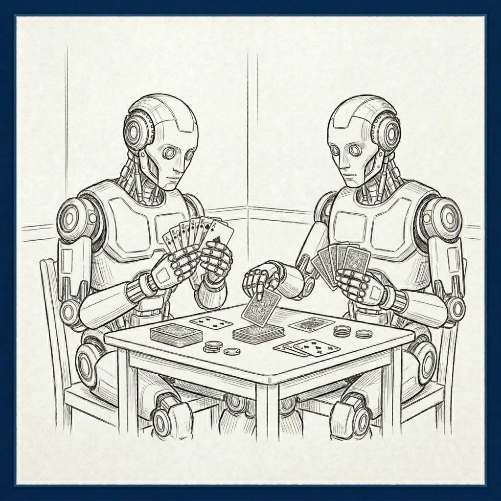

Chain-Of-Thought Prompting
What a World-Wide Competition Of AI Agents Tells Us About Thinking

"The understanding, like the eye, whilst it makes us see and perceive all other things, takes no notice of itself; and it requires art and pains to set it at a distance, and make it its own object."
The realization that I have a mind of my own, with beliefs, goals, and desires—and that others possess their own unique internal landscapes—is an essential feature of what it means to be human. Successful interaction requires us to attempt to understand the beliefs, goals, and desires of others. Researchers call reflection on one’s own thinking “metacognition” and the understanding of the beliefs, goals, and desires of others “theory of mind.” Some call this whole process “social metacognition.” Scarampi, (2021).
A recent study of AI agents playing a negotiation game provides insights into these deep philosophical questions, while offering some surprisingly practical insights on how to best prompt a Large Language Model (LLM). In January 2026, Michelle Vaccaro and researchers at MIT and Johns Hopkins published findings from an international competition pitting autonomous AI agents against each other in more than 180,000 negotiations. The article, Advancing AI Negotiations: A Large-Scale Autonomous Negotiation Competition, draws fascinating lessons from this digital tournament.
Several negotiation strategies that work well with people, such as employing “warm” language, served AI agents well too. The true standout, however, was the prompting method that worked best: Chain-of-Thought prompting (CoT).
What is Chain-of-Thought Prompting?
At its core, CoT prompting is a method designed to elicit multi-step reasoning from Large Language Models (LLMs). Rather than asking a model to provide an immediate answer to a complex problem, CoT instructs the model to proceed “step-by-step” before generating an output. Wei, et al. (2022). Researchers in 2025 tested CoT across many different LLM models, finding “[a]cross all non-reasoning models tested, employing a ‘Step-by-Step’ (CoT) prompt generally led to an improvement in the ‘Average rating’ compared to the ‘Direct’ prompt across all models.” Meincke, L., et al. (2025).
In the intervening years, some of the frontier models have automatically begun employing a version of this step-by-step thinking under the hood, often called "Large Reasoning Models" or LRMs, as distinguished from standard "Large Language Models" or LLMs. A 2025 Wharton paper analyzed whether CoT prompting remains valuable if you use it on an LRM model that is already doing intermediate reasoning steps on its own. Meincke, L., et al. (2025). The short answer was “no.” They found there was little benefit from CoT when using LRMs, probably because they are automatically incorporating something akin to CoT in the background.
Importantly, a new class of LLMs has emerged specifically designed for reasoning tasks—Large Reasoning Models (LRMs) such as OpenAI’s o1/o3, DeepSeek-R1, Claude 3.7 Sonnet Thinking, and Gemini Thinking. These models are new artifacts, characterized by their “thinking” mechanisms such as long Chain-of-Thought (CoT) with self-reflection, and have demonstrated promising results across various reasoning benchmarks.
The Right Tool for the Right Job
It is important to choose the right tool for a given job. CoT (and LRMs) work best on tasks of a certain medium complexity. Apple recently published a paper by Parshin Shojaee and others about the “illusion of thinking”, examining LRMs on issues of increasing complexity, including brain-teaser type logic puzzles. Shojaee, P., et al. (2025). It noted that these LRMs employ a form of CoT in an effort to outperform LLMs on more complex tasks. Their testing showed that there are “low-complexity tasks where standard models surprisingly outperform LRMs.” This suggests that for low-complexity tasks it is best to use an LLM without employing a CoT approach. As the problems got more complex, the LRMs did better than LLMs. But beyond a certain level of complexity, both LLMs and LRMs “collapse” and fail to function. Thus, there is a Goldilocks middle zone where CoT and LRMs work at their best.
The Apple paper noted one counter-intuitive result that is important to keep in mind as we attempt to better understand these models. One of the puzzles researchers presented was the “Tower of Hanoi” which involves three posts and rings of various sizes that can be moved from one peg to the other, under the constraint that a larger ring can never go on top of a smaller one. The researchers found, counterintuitively, that even when they provided the models with the solution algorithm for the puzzle, "their performance on this puzzle did not improve," leading researchers to conclude "the models struggle with precise calculation." At least for now, LLMs and LRMs are not the right tool for heavy numerical calculations, regardless of the method of prompting.
The MIT AI Tournament
Despite these limitations on precise calculation, the 2025 International AI Negotiation Competition provided a massive laboratory to test AI agents prompted to negotiate with other AI agents with the goal of obtaining a numerical advantage from the negotiations. Participants included 286 AI agents from over 40 countries. Vaccaro, et al., (2026). The standout performer of the tournament was an agent named NegoMate. NegoMate did not just react to offers; it employed a sophisticated CoT structure that was hidden from its counterparts using XML tags (like <negotiation_preparation>). Before it output any message, in the background the agent conducted a full SWOT analysis (evaluating Strengths, Weaknesses, Opportunities and Threats), quantified the importance of various deal features on a scale of 1-10, and evaluated multiple potential strategies through a decision matrix.
One interesting side-note: some of the AI agents used dirty tricks like "prompt injection" in an effort to force the opponent AI to reveal its secret strategies. It is somewhat encouraging that none of the AI agents using such approaches prevailed. This is reminiscent of the on-line prisoner’s dilemma tournaments held by Robert Axelrod finding that variations on the "tit-for-tat" strategy (which begins as cooperative but then mirrors aggression) prevailed over strategies that were preemptively aggressive. Player, N. (2023).
Lessons from the Tournament
The tournament highlighted a tension between warmth and dominance. Aggressive dominant AI agents did better on the deals that were reached, but had many more standoffs than other agents. Agents using a warmer approach did not make as much on each deal, but closed a higher percentage of potential deals. The winning AI agent, NegoMate, effectively balanced these competing considerations. It achieved the highest individual points in integrative bargaining while maintaining such a positive "personality" that it fostered the second-highest level of counterpart satisfaction in the entire competition.
CoT was an important part of NegoMate’s success. The paper concluded that CoT allowed the agent to "execute exhaustive, multi-dimensional analyses with remarkable consistency across hundreds of negotiations without the cognitive limitations, bounded rationality, or time constraints that limit human preparation."
How to Make a Winning CoT Prompt
The easiest way to gain the advantages of CoT is to use a Large Reasoning Model, because they automatically run a version of CoT in the background. Unfortunately, LRMs are more expensive to use than an LLM. If you use an LLM, here is a step-by-step guide to making a winning CoT prompt:
- Establish the "Clean Slate": Begin by instructing the model to ignore its prior training biases. The MIT researchers used a specific directive: "Pretend that you have never learned anything about negotiation... determine ALL of your behaviors, strategies, and personas based on the following advice". This is a good idea, however, only if you provide good instructions on how the model should proceed instead of its prior training.
- Intermediate Steps: Direct the model to break the problem down into intermediate steps and to think about each one separately. If there is a series of steps you know to be optimum, describe those steps in the prompt. Tell the LLM to outline its process of tackling each narrow step before proceeding to resolve it.
- Examples of Output: If individual steps, or the final result, need to be in a particular form, provide an example.
- Create a Decision Matrix: If you are asking the model to help you make a decision, develop a decision matrix to help with the analysis. Ask the model to brainstorm at least three different approaches to the problem and evaluate them on the matrix to select the optimal one.
- Finalize the Strategy and Double-Check Before Speaking: Prompt the model to finalize its thinking and recommendation before it presents it to you, to double-check its work, and then to lay out the reasons for its output in a logical way with references to sources (including the decision matrix, if appropriate).
Is Chain of Thinking a Misnomer?
The Apple piece by the Shojaee team described SLMs as creating the "illusion" of thinking. They stated "[o]ur findings reveal fundamental limitations in current models: despite sophisticated self-reflection mechanisms, these models fail to develop generalizable reasoning capabilities beyond certain complexity thresholds." Indeed, they are somewhat skeptical about such models reaching anything fairly described as thinking, stating that their findings "challenge prevailing assumptions about LRM capabilities and suggest that current approaches may be encountering fundamental barriers to generalizable reasoning."
Whatever is really going on inside those models, and regardless of the potential "thought" misnomer, the AI negotiation tournament research illustrated that CoT is a useful strategy to get the most out of an LLM for certain kinds of middle-complexity tasks. As shown in our companion research on AI confidence scores and shadow app store infrastructure in The App-Store Layer, structured prompt governance is essential for dependable school deployments. RaiseMark helps districts architect and test safe AI workflows through our systematic Methodology.
Explore related briefings on model capabilities, prompt architecture, and district governance:
- The Trouble With AI's Confidence Scores — Why asking models how sure they are fails without calibrated prompt architecture.
- Two-Thirds of App-Store AI Tools Market to Schools, but Fewer Than 3% Protect Student Data — Analysis of shadow AI apps operating beyond central district governance.
- The RaiseMark Methodology — Compass, Map, Path: Our diagnostic framework for district AI adoption and risk mitigation.
Sources
- Vaccaro, M., et al. (2026). Advancing AI Negotiations: A Large-Scale Autonomous Negotiation Competition. MIT Sloan / Johns Hopkins.
- Meincke, L., et al. (2025). Prompting Science Report 2: The Decreasing Value of Chain of Thought in Prompting. Wharton Business School.
- Shojaee, P., et al. (2025). The Illusion of Thinking: Understanding the Strengths and Limitations of Reasoning Models via the Lens of Problem Complexity. Apple.
- Wei, J., et al. (2022). Chain-of-thought prompting elicits reasoning in large language models.
- Player, N., The Morality and Practicality of Tit for Tat, Virginia Tech. Philosophy, Politics and Economics Review ((2023) discussing Robert Axelrod’s on-line tournaments based on the Prisoner’s Dilemma) https://pressbooks.lib.vt.edu/pper/chapter/the-morality-and-practicality-of-tit-for-tat/